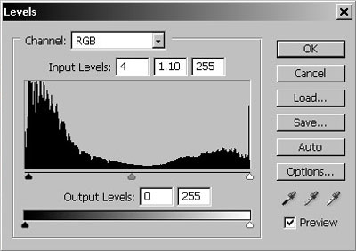

Photoblog mejnijak
Za mene je trenutno najjača fora praćenje fotoblogova ( ~ sav šupljikav jer to je fora - Sunđer Bob Kockalone... ~ ). Hvala Bogu, pa se primila i ta RSS tehnologija, tako da 20ak skoro otkrivenih foto blogova mogu da pratim sa jednog mesta - iz svog feed agregatora.
Svako jutro čeka me barem pola tuceta savršenih fotografija; kada biste samo znali koliko neki ljudi vremena potroše na obrađivanje jedne slike, i kakve Photoshop zahvate pri tome preduzimaju, pomislili biste da fotka onakva kakva je izašla iz kamere jednostavno ne može da valja.
Pa, striktno govoreći, i ne može (profi aparati se podešavaju tako da sliku što manje procesiraju, a i nema pravog fotografa koji ne slika u RAW formatu, što podrazumeva post-processing, bla bla bla).
Slučajno sam preko linkova na jednom sajtu došao do Absentera, i to je prvi klasični foto blog koji sam otkrio. Odatle sam opet došao do fenomenalnog Daily dose of Imagery, koji je upravo proglašen za Photo blog of the Year u The 2006 Photobloggies takmičenju.
Ono što mi se najviše sviđa u konceptu svakog dobrog foto bloga je izrazita jednostavnost layouta, koju naravno nameće sama priroda sadržaja koji se objavljuje. Imate sliku pozamašne pikselaže, imate dugmiće previous i next, i obično neku arhivu, gde su sve slike na jednom mestu predstavljene thumbnailovima. I to je to, jebemmu!
Evo šta je Photobloggies izabrao kao najbolje u sledećim zanimljivim kategorijama:
- Best american Photoblog - http://www.notraces.com/
- Best Latin American Photoblog - http://www.alinemotta.com/
- Best Western European Photoblog - http://www.deceptivemedia.co.uk/
- Best Eastern European / Russian Photoblog - http://dgoutnik.net/
- Best African / Middle Eastern Photoblog - http://gosu.co.za/
- Best Animal Photography - http://blog.moment.ee/
- Best Landscape Photography - http://zenith9.my-expressions.com/
- Best Under 18 Photoblog - http://www.thefotokid.com/
 RSS feed
RSS feed
 sadržaji se objavljuju pod
sadržaji se objavljuju pod